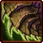
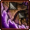
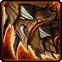
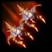

- Stats
- Abilities/Upgrades
- Strategy
- Lore
- Related
Armor: 1
 0/0 0 per second
0/0 0 per secondDamage: 20 per Broodling
Attacks: 1
Cooldown: 2.5
Targets: Ground only
Attack Range: 9.5
Speed on Creep: N/A
Acceleration: 1.063
Collision Radius: 1
Requirements: Level 2 requires Lair, level 3 requires Hive
| Level |  Level 1 Level 1 |  Level 2 Level 2 |  Level 3 Level 3 |
| Minerals |  100 100 | 175 | 250 |
| Vespene Gas |  100 100 | 175 | 250 |
| Time |  160 160 | 190 | 220 |
| Damage Bonus | +2 | +4 | +6 |
| Total Damage | 22 | 24 | 26 |
150 (300)Vespene Cost:
150 (250)Supply:
 4
4Produced From: Corruptor Build Time:
34 (71)Requirements: Greater Spire
Unit Type: Armored, Biological, Massive, Air
Requirements: Level 2 requires Lair, level 3 requires Hive
| Level |  Level 1 |  Level 2 |  Level 3 |
| Minerals | 150 | 225 | 300 |
| Vespene Gas | 150 | 225 | 300 |
| Time | 160 | 190 | 220 |
| Armor Bonus | +1 | +2 | +3 |
| Total Armor | 2 | 3 | 4 |
| Icon | Minerals | Vespene Gas | Research Time | Researched At |
|  | 0 | 0 | 0 | Already Researched |
Information: The Brood Lord shoots Broodlings at its target. A Brood Lord can only have two Broodlings ready to throw at a time.
Broodlings are small creatures that have a fast melee attack. Broodlings benefit from Ground Melee Attack and Ground Carapace upgrades.
If you have any suggestions for more strategies, go ahead and post on the forums 'here'!
+1 Weapons vs Zerglings
When Zealots have a +1 weapon advantage versus Zerglings, they will kill Zerglings in two attacks instead of three. This makes Zealots very effecient against Zerglings until the zerg catches up in armor upgrades.
Because of this, there are a handful of timing attack that take advantage of the effecient +1 weapon zealots, forcing the zerg to make spines, roaches, or some other unit than zerglings unless the zerg wants to trade inefficiently.
+1 Weapons vs Zerglings
Sum text about how gosu this is
+1 Weapons vs Zerglings
Sum text about how gosu this is
- Overview
The brood lord is a powerful zerg flying unit derived from the corruptor.
Brood lords are massive manta-like flying creatures that serve as aerial siege units for the Swarm. Only seen in the largest of conflicts, the brood lord has the ability to spit out biological symbiotes that function as living ammunition.
This attack makes brood lords extremely dangerous to opposing installations. However, despite their impressive offensive abilities, brood lords are not very durable, and they make easy targets for most aerial-strike combatants.
Source Information
Text information from the Starcraft Wiki.
Photo 1 created by Saejin Oh. Copyright: UDON Entertainment.
Photo 2 created by Samwise Didier. Copyright: Blizzard Entertainment.
| Zerg |
| Units |
| Hatchery Tech | Drone | Overlord | Queen | Zergling | Baneling | Roach |
| Lair Tech | Overseer | Hydralisk | Mutalisk | Corruptor | Infestor |
| Hive Tech | Ultralisk | Broodlord |
| Spawned Units | Larva | Changeling | Infested Terran | Broodling |
| Structures |
| Hatchery Buildings | Extractor | Spawning Pool | Baneling Nest | Roach Warren | Evolution Chamber |
| Lair Buildings | Hydralisk Den | Spire | Infestation Pit | Nydus Network |
| Hive Buildings | Ultralisk Cavern | Greater Spire |
| Defensive Buildings | Spine Crawler | Spore Crawler | Creep Tumor | Nydus Worm |